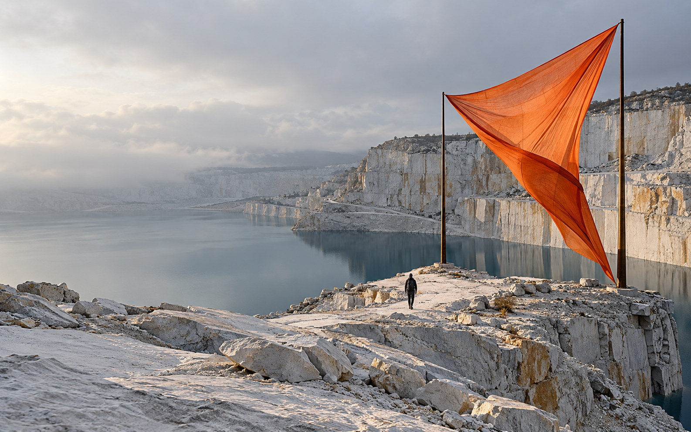

ПОЛЕВАЯ КОЛЛЕКЦИЯ / 2026ЗАКРАЙ.Пешие прогулки, новые точки зрения.
01
Выставочный плакат
Один образ и крупная типографика держат внимание. Подходит, когда у проекта есть выразительный предмет или изображение.
Смотреть Fondation Cartier ↗